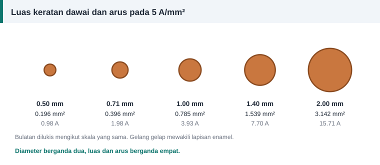

Dawai dan penebat
Memilih Saiz Dawai Belitan: Ketumpatan Arus dan Luas Keratan
Soalan pertama di kaunter kedai dawai hampir selalu sama: "Dawai nombor berapa?" Jawapan yang betul bergantung pada arus yang mengalir dalam belitan, bukan pada kuasa kuda semata-mata.


Mulakan dengan arus fasa
Ambil arus daripada plat nama. Untuk sambungan bintang, arus fasa sama dengan arus talian. Untuk sambungan delta, bahagikan arus talian dengan √3. Jika belitan mempunyai beberapa laluan selari, bahagikan lagi dengan bilangan laluan.
Apa itu ketumpatan arus
J = I ÷ A
J ialah ketumpatan arus dalam ampere per milimeter persegi, I arus dalam konduktor dan A luas keratan kuprum. Semakin tinggi J, semakin banyak haba terhasil dalam setiap gram kuprum.
Susun semula untuk mencari luas, kemudian diameter:
A = I ÷ J
d = √(4 × A ÷ π)
Nilai J yang munasabah
Tiada satu angka ajaib. Gunakan panduan berikut sebagai titik mula.
- Buku teks reka bentuk klasik mencadangkan sekitar 3 hingga 5 A/mm² untuk belitan stator motor aruhan.
- Rujukan reka bentuk yang lebih baharu memberi julat lebih luas, kira-kira 3 hingga 8 A/mm², bergantung pada penyejukan.
- Motor kecil berkipas sering berada di hujung atas julat itu kerana alurnya sempit dan permukaannya besar berbanding isi padu.
- Pengubah kecil yang disejukkan udara secara semula jadi biasanya direka sekitar 2.5 hingga 3.5 A/mm².
Motor yang bekerja berterusan dalam kepungan tertutup, pada suhu ambien tinggi atau kerap dihidup-matikan patut diberi J yang lebih rendah.
Contoh
Motor 2.2 kW, 400 V sambungan bintang, arus plat nama 4.8 A, satu laluan. Pilih J = 5.5 A/mm².
- A = 4.8 ÷ 5.5 = 0.873 mm².
- d = √(4 × 0.873 ÷ 3.1416) = 1.054 mm.
- Saiz piawai terdekat ialah 1.06 mm dengan luas 0.882 mm², memberi J sebenar 5.44 A/mm².
Had sebenar: ruang alur
Dalam motor kecil, dawai yang dipilih mengikut J sering tidak muat. Ruang alur yang menentukan. Semak faktor isian alur sebelum membeli dawai.
Jika dawai yang muat memberi J melebihi kira-kira 8 A/mm², semak semula data. Mungkin bilangan lilitan terlalu banyak, sambungan tersalah baca, atau motor itu memang direka untuk tugas sekejap-sekejap.
Petua bengkel
- Jangan sekali-kali mengurangkan luas kuprum berbanding belitan asal. Sama, atau lebih besar sedikit, ialah peraturannya.
- Ukur dawai lama dengan mikrometer selepas enamelnya dibuang, di beberapa tempat.
- Jika saiz tepat tiada, gunakan dua dawai selari daripada turun satu saiz.
- Panduan amalan baik EASA/AEMT menyatakan bahawa konduktor daripada dawai yang lebih sedikit tetapi lebih besar adalah lebih baik daripada banyak dawai halus, bagi jumlah luas yang sama.
Kira dengan cepat
Masukkan arus, ketumpatan arus dan luas alur ke dalam kalkulator lilitan semula. Ia memilih saiz piawai, menyemak isian alur dan memaparkan nombor tolok SWG serta AWG yang terdekat. Jadual penuh ada dalam jadual saiz dawai.
Rujukan dan bacaan lanjut
Artikel berkaitan
Faktor Isian Alur: Berapa Banyak Dawai Boleh Masuk
Pengiraan memberi bilangan lilitan dan saiz dawai, tetapi alur yang menentukan sama ada semuanya muat. Faktor isian ialah semakan terakhir sebelum mula melilit gegelung.
Jadual Saiz Dawai SWG, AWG dan Milimeter untuk Lilitan Motor
Jadual rujukan pantas menukar nombor tolok SWG dan AWG kepada diameter milimeter, luas keratan dan saiz metrik terdekat bagi dawai kuprum berenamel untuk lilitan motor.
Menggunakan Dawai Selari Sebagai Ganti Saiz yang Tiada
Saiz dawai yang diperlukan tiada di kedai? Dua atau tiga dawai halus selari boleh menggantikannya asalkan jumlah luas keratan kekal. Lihat formula dan jadual gabungan.